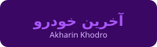

پوشش تمامی خبرگزاریها و رسانههای منتشرکننده با لوگو در کنار نام و لینک گزارش
تمامی ۲۹ خبرگزاری رسمی سراسری، روزنامههای اقتصادی، پایگاههای تخصصی خودرو و شبکههای تصویری که به پوشش افتتاحیه، زیرساخت ۹۰ شوروم و تحلیلهای اقتصادی اتوپلازا پرداختهاند، به ترتیب اولویت و اعتبار رسانهای با لوگوی اختصاصی در کنار نام خبرگزاری.
اتوپلازای تهران، پایتخت بازار خودرو؟/ نمایشگاه، تعمیر و خدمات دیجیتال خودرو در یک مجموعه
گزارش تفصیلی ایسنا از اظهارات امیرپرویز فرزان مدیر مجتمع و امیرحسین افراسیابیپور پیرامون ایده اولیه اتوپلازا از اتو اکسپو، تجمیع ۹۰ شوروم تخصصی، خدمات هایپر قطعات و سوپراپلیکیشن رایگان خودرویی.
اتوپلازای تهران به جاده مخصوص رسید؛ ۱۶۴ هزار مترمربع و ۹۰ شوروم تخصصی
بررسی اختصاصی خبرنگار مهر از اهداف شکلگیری اتوپلازا در غرب پایتخت، تفکیک ۸۲ هزار متر شوروم و ۸۲ هزار متر پارکینگ با ظرفیت ۳ هزار خودرو و تجمیع کارشناسی رنگ، تعویض پلاک و خدمات لیزینگ.
گزارش تصویری و میدانی صداوسیما از آغاز به کار بزرگترین هاب متمرکز خودرویی پایتخت
پوشش تصویری تور اصحاب رسانه در ۲۰ مهر و افتتاحیه رسمی ۱۳ آبان؛ بررسی مدل نوین تجمیع بازار خودرو، شفافسازی قیمتها، معاینه فنی، پلاکگذاری و استقرار برندها در کیلومتر ۱۱ جاده مخصوص.
رونمایی از «اتوپلازای تهران»؛ تولد بزرگترین هاب متمرکز بازار خودرو در جاده مخصوص
تحلیل راهبردی گروه خودرو و بازرگانی دنیای اقتصاد پیرامون انتقال بازار خودرو از نمایشگاههای سنتی شهری به زیرساخت یکپارچه صنعتی با ۹۰ شوروم و توسعه بازوی خدمات اعتباری و تسهیلات بانکی.
اتوپلازا تهران افتتاح شد / بازار یکپارچه خودرو با ۹۰ شوروم و خدمات هوشمند
گزارش تحلیلی پیرامون آغاز فعالیت رسمی اتوپلازا با وسعت ۱۶۴ هزار مترمربع، رونمایی سوپراپلیکیشن با ۱۹ دستیار هوش مصنوعی و تلفیق خرید، فروش، بیمه و تفریحات خانوادگی در یک مقصد.
اتوپلازا تهران افتتاح میشود؛ ۷ شب کنسرت رایگان و قرعهکشی خودرو در بزرگترین بازار خودروی ایران
جزئیات فستیوال ۷ شب کنسرت رایگان با اجرای اشوان، رضا صادقی، امید حاجیلی، علیرضا طلیسچی و عرشیاس همراه با قرعهکشی روزانه پژو ۲۰۷ برای بازدیدکنندگان عمومی.
رونمایی از سوپراپلیکیشن «اتوپلازا» با حضور ۱۹ ایجنت هوش مصنوعی
معرفی کاملترین اپلیکیشن خودرویی ایران با دستیارهای تخصصی هوش مصنوعی برای کارشناسی قیمت لحظهای، استعلام بیمه، خلافی، سفارش قطعات و مقایسه فنی خودروها.
آئودی E5 اسپرتبک توسط معین خودرو در شوروم اتوپلازا رونمایی شد؛ ارباب حلقهها، بدون حلقه!
پوشش میدانی اسب بخار از رونمایی شوتینگبریک تمامبرقی SAIC-AUDI در شوروم معین خودرو اتوپلازا؛ بررسی موتور ۲۹۹ اسب بخاری، باتری ۷۶ کیلووات ساعتی و نمایشگر سرتاسری ۲۷ اینچی.
رونمایی از آئودی E5 اسپرتبک برقی در ایران + مشخصات فنی و امکانات در اتوپلازا
گزارش اختصاصی پرشین خودرو از استقرار معین خودرو در اتوپلازای تهران، مشخصات فنی تیپهای مختلف E5 با پیمایش ۶۱۸ کیلومتر و فناوریهای نوین ایمنی ۵ ستاره C-NCAP.
افتتاح اتوپلازا تهران؛ مقصد جدید عاشقان خودرو در فضایی به وسعت ۸۲ هزار مترمربع
بررسی جامع چرخان از تلفیق شورومهای مدرن با جاده سلامت پیادهروی، فودکورت، هایپرمارکت قطعات، فضاهای تفریحی و میزبانی از رونمایی محصولات جدید برندها در اتوپلازا.
مجموعه نمایشگاه خودرو اتو پلازا تهران واقع در کیلومتر ۱۱ جاده مخصوص؛ مقصدی جدید برای عاشقان خودرو
گزارش خودرو دیلی از تور اصحاب رسانه، جزئیات سالنهای دیتیلینگ، تشخیص رنگ لیزری، تنوع برندهای مونتاژی و وارداتی و گذر از نمایشگاههای سنتی به مجتمعهای مدرن متمرکز.
اتوپلازا؛ تلاش برای بازتعریف تجربه خرید خودرو و گفتگو با امیرپرویز فرزان
مصاحبه تحلیلی پیرامون ساماندهی زنجیره تأمین، تجمیع ۹۰ شوروم تخصصی، خدمات پس از فروش و تعامل فعالان بازار خودرو و توسعه زیرساخت شارژ خودروهای برقی.
اتوپلازا تهران با ۹۰ شوروم تخصصی خودرو افتتاح شد؛ سرمایهگذاری کانون ایران نوین
گزارش افتتاح اتوپلازا با ۳ هزار واحد پارکینگ، یکپارچهسازی فرآیند انتخاب تا تحویل خودرو و ایجاد اشتغال پایدار برای بیش از ۲ هزار متخصص حوزه خودرو.
اتوپلازا وارد میدان شد؛ از دستیار هوشمند تا خرید خودرو و فروش اقساطی
مصاحبه با مهدی معظمی معاون دیجیتال کانون ایران نوین پیرامون توسعه نرمافزاری، فروش اقساطی و لیزینگ خودروهای داخلی و مونتاژی و تیونینگ تخصصی.
اتوپلازای تهران | آینده بازار خودرو یا آزمونی پرهزینه برای یک ایده جذاب؟
تحلیل عمیق علی باخرد از ریسکهای ساختاری تجمیع ۹۰ شوروم تحت مدیریت ایران نوین، تعارض منافع ناظر و ذینفع، و چالشهای پایدارسازی هزینههای عملیاتی مگاپروژه.
اتوپلازا تهران افتتاح شد؛ ۹۰ شوروم خودرو در یک مجموعه یکپارچه
بررسی تخصصی ماشین ۳ از مساحت ۱۶۴ هزار متری، ۸۲ هزار مترمربع شوروم خودروهای صفر کیلومتر، پارکینگ ۳ هزار خودرویی و توسعه خدمات دیجیتال با شعار «مقصد جدید عاشقان خودرو».
اتوپلازای تهران؛ مقصدی جدید برای عاشقان خودرو (رپورتاژ رسمی باما)
رپورتاژ اختصاصی باما از گردهمایی برندهای برتر خودروسازی در جاده مخصوص، امکان تست درایو، کارشناسی فوری، تسهیلات پرداخت و تجمیع زنجیره توزیع در اتوپلازا.
اتوپلازا؛ تلاش برای بازتعریف تجربه خرید خودرو در ایران (گفتوگو با امیرپرویز فرزان)
گفتوگوی تفصیلی اکوایران با مدیر اتوپلازا پیرامون گذار از نمایشگاه سنتی به مجتمعهای مدرن خودرویی، رفع دغدغه کلاهبرداری در معامله و ساماندهی عرضه مستقیم در جاده مخصوص.
افراسیابیپور: اتوپلازا فقط محل خرید ماشین نیست / سوپراپ خودرو با چه هدفی رونمایی شد؟
توضیحات معاون استراتژی و کسبوکار ایراننوین در تور اختصاصی رسانهای پیرامون زیرساختهای فیزیکی، استودیوهای تولید محتوا برای خبرنگاران خودرو و امکانات رفاهی و ورزشی اتوپلازا.
این جا مقصد عاشقان خودرو است؛ گزارش میدانی از شهرک خودرویی غرب تهران
گزارش میدانی تفصیلی سحر جعفریان از تنوع خودروهای کلاسیک تا مدلهای لوکس و اقتصادی زیر یک سقف، هایپرمارکت قطعات یدکی و فضاهای تفریحی اتوپلازا.
وزارت صمت در برابر ورود ایران نوین به جاده مخصوص چه مسئولیتی دارد؟
نقد و بررسی موشکافانه پیرامون پیامدهای حضور یک هلدینگ تبلیغاتی بزرگ در مقام مجری و ناظر مستقیم زنجیره فروش و توزیع خودرو در کشور و چالشهای انحصار صنفی.
بررسی جامع زیرساخت اتوپلازا و شورومهای برندهای داخلی و وارداتی
واکاوی پدال از معماری مدرن سالنهای اتوپلازا، استقرار برندهای فونیکس، لاماری، دیگنیتی، تویوتا و خودروهای هیبریدی و برقی در هاب متمرکز غرب تهران.

گزارش تصویری آخرین خودرو از گردهمایی سوپرکارهای خاص در افتتاح اتوپلازا
پوشش ویدیویی حضور خودروهای شاخص (تسلا سایبرتراک، شورولت کوروت، دوج رم TRX و فورد موستانگ) و استقبال پرشور هزاران علاقهمند به خودرو در شبهای جشن اتوپلازا.
جزئیات خدمات پس از فروش، کارشناسی رنگ و تعویض پلاک در اتوپلازا
معرفی فرآیند یکپارچه خرید و فروش سوئیچ به سوئیچ، کارشناسی تضمینی با دستگاههای لیزری، تعویض پلاک در محل و اعطای گواهی اصالت فنی به خریداران.
لغو فستیوال کنسرتهای رایگان اتوپلازا به علت شرایط نامساعد جوی و هشدار قرمز سیل
اطلاعیه رسمی ستاد بحران و مدیریت اتوپلازا پیرامون توقف موقت اجرای زنده کنسرتها در پی بارندگیهای سیلآسا در جاده مخصوص و حفظ سلامت شهروندان.
رژه خودروهای لوکس در تنگنای ارزی؛ پرسشهای نظارتی پیرامون بازار خودرویی اتوپلازا
تحلیل نقادانه اقتصاد نوآوری درباره عدم همخوانی عرضه سوپرکارهای میلیاردی با وضعیت عمومی معیشت و لزوم شفافسازی سازوکارهای مالیاتی و بانکی مگاپروژهها.
از تسلا و بوگاتی تا خودروهای ایرانی؛ شهرک خودرویی تهران کجاست؟
معرفی امکانات رفاهی برای خانوادهها، کافهها، محوطه بازی کودکان و ترکیب تجربه خرید خودرو با اوقات فراغت و سبک زندگی مدرن شهری.
رپرتاژ ویدیویی اختصاصی تیوی پلاس از کنسرتهای زنده و چهرههای مشهور در اتوپلازا
مصاحبههای ویدیویی داغ با رضا صادقی، اشوان، امیرحسین رستمی و الیکا عبدالرزاقی روی استیج اتوپلازا و فیلمبرداری از قرعهکشی خودرو ۲۰۷ در میان جمعیت.
امواج صدا و پیامهای بازرگانی رادیویی پیرامون دسترسی به اتوپلازا و فستیوال جوایز
پخش پیامهای ترافیکی در رادیو پیام برای هدایت روان خودروها به پارکینگ ۳ هزار واحدی و تیزرهای جشنواره پرانرژی ۷ شب کنسرت در رادیو جوان.